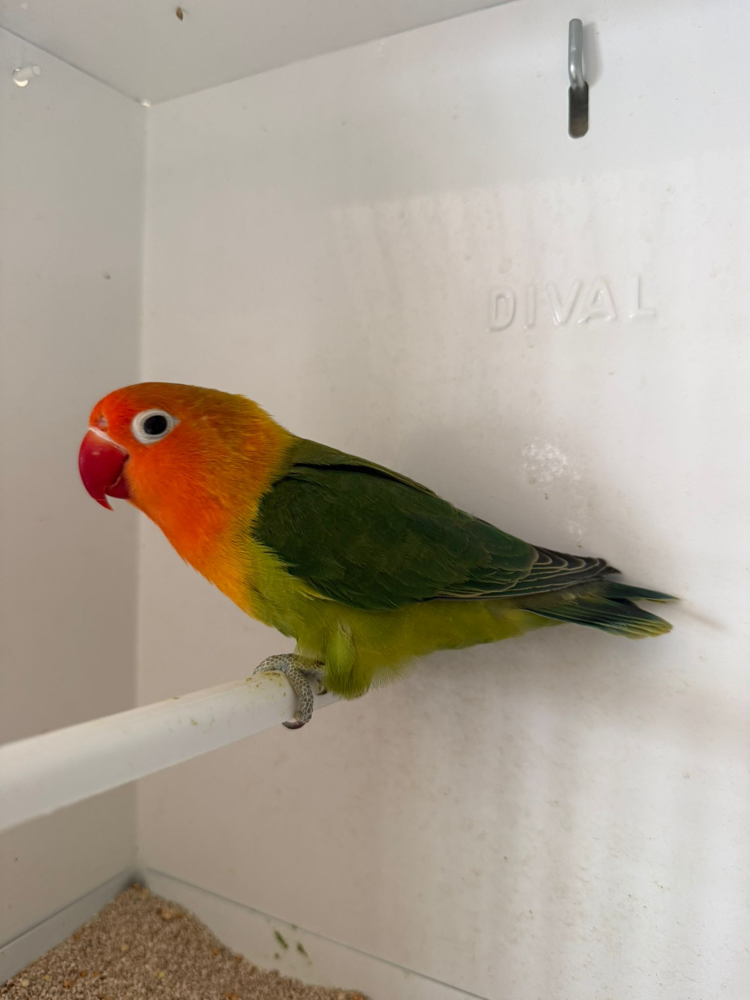
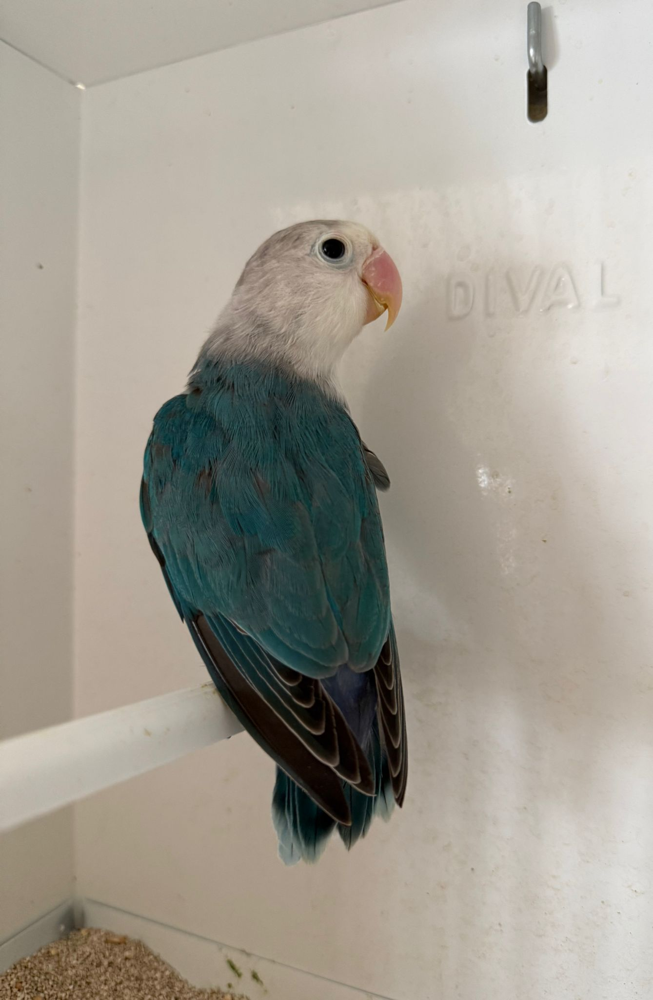
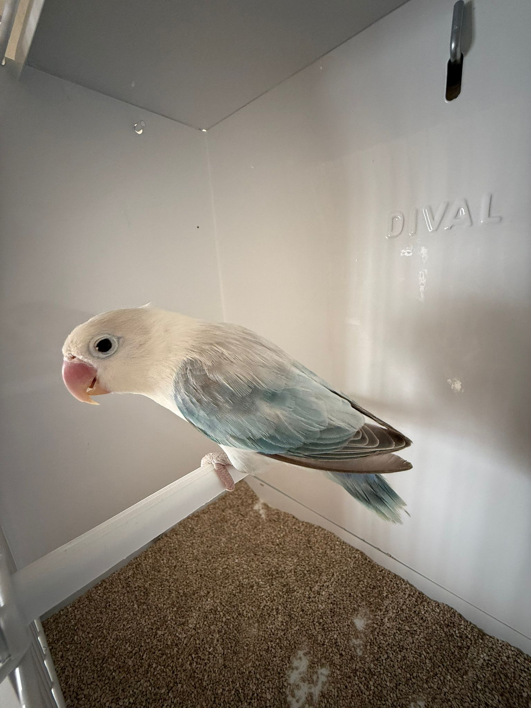
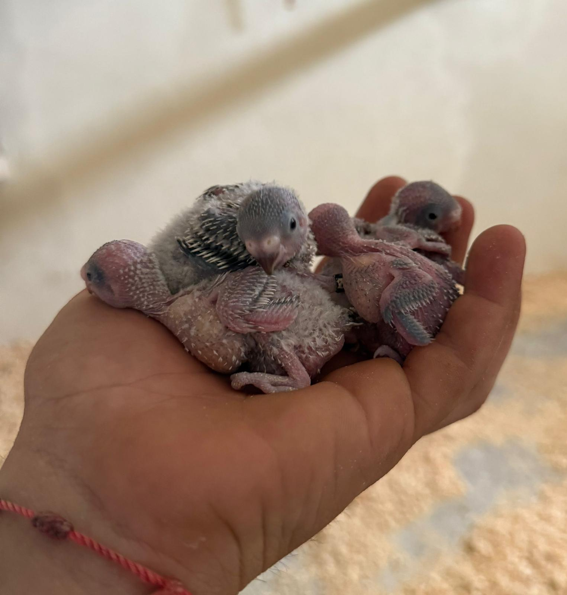

Macho Verde/Azul/Opalino/Dilute
Sexado por ADN. Anilla (19/25) Edad: 10 meses

Hembra Verde/Azul/Opalino/Dilute
Sexado por ADN. Anilla (06/25) Edad: 12 meses

Macho Azul/Dilute
Sexado por ADN. Anilla (17/25) Edad: 10 meses

Hembra Azul/Ewing Pale
Sexado por ADN. Anilla (64/20) Edad: 4 años

Papilleros
Próximamente estarán disponibles nuevas crías papilleras.